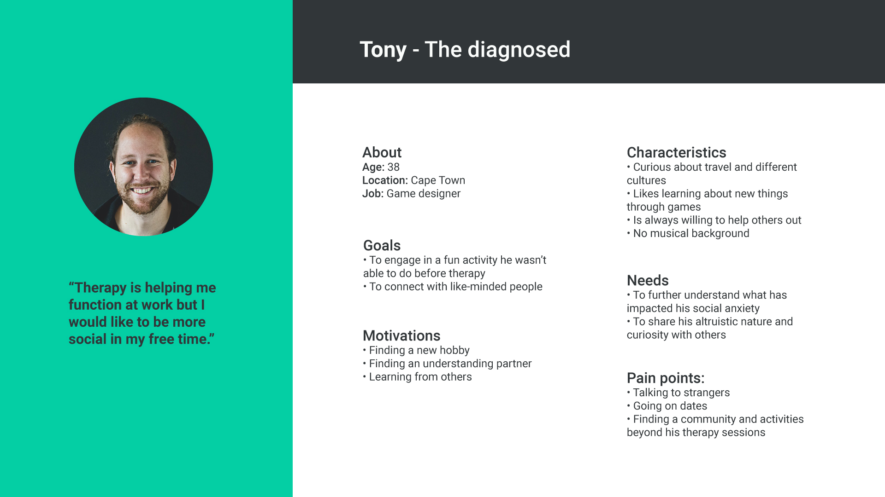
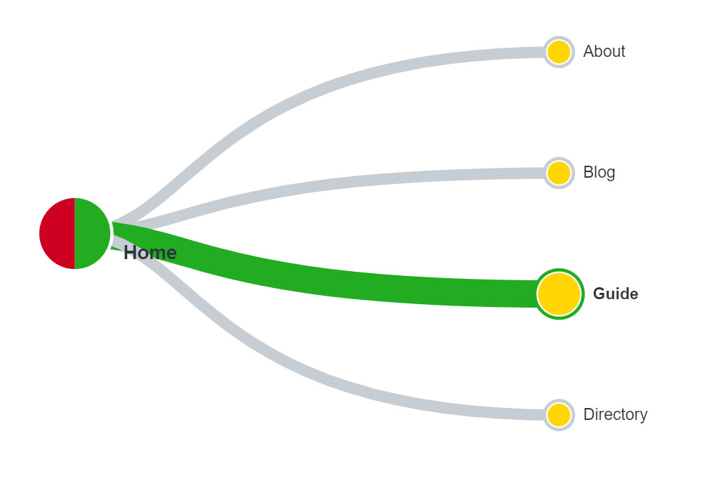
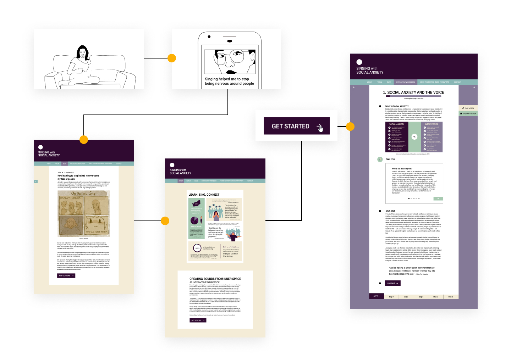

MENTAL HEALTH LX: DESIGNING A SINGING PLATFORM FOR PEOPLE WITH SOCIAL ANXIETY
Whether singing could be a therapeutic activity for individuals suffering from social anxiety was on my mind for some time.
So in 2022, I made it the focus of an independent study project I completed as part of a user-centred design course at Red & Yellow Creative School of Business.
To find out what studies have been conducted on the topic, I started with baseline research and then gathered qualitative insights from interviews and field research. First I tried to determine whether singing could help to reduce social anxiety, as well as what treatments exist for social anxiety and how they might relate to the process of learning to sing.
Then I looked into how my findings could be translated into an online format.
ROLE AND SCOPE
This was an individual project spanning from February to November 2022, completed in my own time alongside the full-time user-centred design programme.
Based on rigorous UX research, ideation processes and user testing, the end result was a high-fidelity interactive prototype designed through an iterative process.
SOFTWARE USED
Figma • Illustrator • Photoshop • PremierPro
Source: Rescue Remedy, 2022
FIRSTLY, WHAT IS SOCIAL ANXIETY?
Contrary to many people’s first impression, it is not simply shyness, introversion or a choice not to interact.
It is a debilitating mental disorder characterised by an excessive fear of judgement that results in a masking of one’s true self to others. According to the US-based National Social Anxiety Center,
negative self-evaluation, maladaptive perfectionism and catastrophising thought patterns cause individuals with social anxiety to either avoid social situations completely or endure them through engaging in safety behaviours – such as avoiding eye contact, over-preparing conversations or drinking alcohol. Normal situations which are everyday for most people – such as asking your boss for leave, giving a class presentation or eating in public – feel like performing in front of a highly critical audience.
These fears manifest physically in the form of sweating, blushing, trembling, heart racing or a complete inability to speak.
“It's this thing of am I speaking correctly, am I standing properly, am I walking properly, am I breathing too loud, literally every little thing.
There's a fear of existing and you can't engage and interact with people.”
Denise on experiencing social anxiety
Although the exact reasons could be complex, it is known that social anxiety increases through avoidant behaviour.
This is often caused by genetically-influenced inhibition, trauma and negative childhood experiences
– such as being laughed at during a presentation, for instance. The trauma could range from small to big but what’s important is that, through avoidance, people with social anxiety never learn that social situations aren’t as terrifying as they think they are, leaving a lot of room for catastrophising and rumination.
AVAILABLE TREATMENTS
Exposure therapy, a form of cognitive behavioural therapy, is considered the most effective evidence-based treatment for social anxiety. It consists of identifying a fear hierarchy, and facing these fears step-by-step, starting with the most managable one. Before tackling the challenge head-on, it is useful to imagine the situation first and identify strategies for dealing with it. Replacing negative thought patterns with healthier ones, and finding realistic ways of dealing with a worst possible outcome is important.
If the challenge is to ask a stranger on the street for directions, the initial fear might express as: “Everyone is going to think I’m weird if I stumble over words.” This could be replaced with a more specific, realistic one, such as “The person I’m asking for directions might think I’m not well-spoken.” Then you would figure out how you could cope with the realistic worst-case outcome, and ask yourself if it would really be that bad. Bit by bit, the more you face your fears and deal with them in a healthy manner, without safety behaviours, anxiety reduces over time.
Although some human contact is important, studies have found that self-help for social anxiety is successful – at the very least it’s better than not receiving any help at all. For instance, a paper by Miloff et al. exploring design considerations for The Challenger App mentions how learning about tools and coping strategies on your own and engaging in self-administered exposures has been found to reduce social anxiety.
GETTING HELP
According to the National Anxiety Center, social anxiety is highly treatable, but around 80% to 95% of individuals suffering from SAD do not seek treatment and the average time until people seek treatment for those who do is 16 years. Beyond lack of knowledge about treatments and difficulties in accessing care, one of the main reasons is the nature of the disorder: worrying what others might think if you are receiving help.
THE PROBLEM
After my initial deep-dive into existing research on social anxiety, I identified the problem as following:
Individuals who suffer from social anxiety are afraid to reveal their true selves to others because of excessive fear of judgement. This results in avoidant behaviour and a difficulty to connect to others meaningfully. Despite not being able to function adequately, most individuals with social anxiety do not receive suitable help.
LEARNING TO SING
Once I had a better understanding of what social anxiety is, I looked into the process of learning to sing, and its potential for self-exploration and self-acceptance. From doing some baseline research, as well as some qualitative research through speaking to three voice teachers, a music therapist, the head of psychiatry at Stellenbosch University, as well as Denise, whose choir experience helped her manage social anxiety in high school, the insights can be summarised as following:
Singing has positive effects on self-esteem and social inclusion
Voice work can teach you to become okay with taking risks and making mistakes
Voice work has the ability to uncover underlying emotions that may not be expressed in everyday life, and therefore establish a deeper sense of who you are
Voice work has the ability to unlock creative processes through playfulness and experimentation
Techniques needed for singing, such as deep breathing, deep listening, and projecting your voice, can help to reduce symptoms of anxiety
Mindful techniques, such as “watching your thoughts pass by” are also used to develop a non-judgemental relationship with your voice and to disarm negative thoughts in exposure therapy
For it to be effective, the process should be modelled on graded exposure therapy
Learning to sing is a process that doesn’t happen overnight, it’s unique to each individual and requires some willingness and dedication
One of the main themes that came up was that, if done in the right environment, without over-focusing on pitch or singing “perfectly”, and instead encouraging playfulness, improvisation and acceptance, singing has potential for overcoming the excessive fear of judgement that people with social anxiety suffer from. Here are some quotes from the interviews I conducted that convey this idea.
A summary of insights gathered from qualitative research
CHALLENGES
It was now clear to me that there was potential for singing to help combat social anxiety, but I still didn’t know how this could be implemented as a digital solution. Influenced by my background in e-learning design, the idea of an online course with CBT-inspired singing exercises was swimming around in my head. But because I’m not a singing or mental health expert, I wasn’t sure how I would be able to present this information in an authentic way. I was thinking about copyright issues, and also how to involve all the people I had gathered this information from. How could it benefit them as well as people with social anxiety?
Also, when talking to voice teachers, it became very obvious that – although they had all done some sort of digital teaching during lockdown – this was not ideal. Realistic in-person feedback is essential for someone who’s learning to sing, especially if you have a tendency for catastrophic thinking. This way not only unhealthy voice production can be corrected, but the process can also be tailored through comforting guidance. At the same time, Denise told me that she believes that teaching singing digitally has benefits because “being in the physical presence of someone can be a lot” so starting to sing online would be beneficial for people struggling with social anxiety.
To spark some more ideas, I decided to do some field research. I wanted to understand what a voice lesson with a specific focus on self-acceptance actually felt like. So in Germany, I took an experimental voice lesson with Jens Thoben, who I had interviewed previously, and in Cape Town, Catharine Hill, who has taught students with social anxiety purely for therapeutic purposes, agreed to give me a lesson. My initial idea was to do an observation, but I realised this would have been problematic due to the intimate nature of a therapeutic singing lesson.
The main insight from these lessons was that just having theoretical information is not enough. Repetition of interactive, practical exercises and taking on a role to distract your mind – such as “pretend you're an opera singer” – are important for unlearning nervous responses. But it was a random comment by Catharine that actually inspired the main idea for a solution. She mentioned how it would be really beneficial for people to know that singing lessons are not just for singers with prior experience because this would get voice teachers more work. I now realised that the solution should be about giving people this empowering information – that singing has potential as a therapeutic activity for social anxiety – and then connect those who are interested to professionals who work in this context.
An early storyboard describing the onboarding process
THE SOLUTION
I eventually arrived at the following solution: a platform for individuals who experience social anxiety to learn about coping strategies in the form of simple self-administered voice exercises, listening exercises and cognitive behavioural therapy-inspired exercises. These would build up to a final exposure: booking an in-person voice or music therapy session.
These exercises would be contributed in video-format by voice teachers and music therapists. Learners would get an insight into how they work, and be able to make an informed decision about who they feel most comfortable with. After learning about exposure therapy, and practising at home in a safe space, learners apply their knowledge in an interactive branching scenario prompting them to imagine singing in front of someone. Once this is completed, they are presented with a directory of voice teachers and music therapists in their area, with an option to book a lesson – if ready.
Although it is not to be considered a replacement for in-person therapy, this platform may draw attention to a helpful activity that is less stigmatised and potentially open further doors.
To make it sustainable, a percentage could be taken for each booking that is made through the site.
COMPETITIVE RESEARCH
An online search did not reveal many platforms that specifically speak to combatting social anxiety through singing. One platform that comes closest is Awaken your radiant voice. It offers a 7-week online course covering subjects such as ‘Learn to love and trust your voice’, ‘Sing more and find joy and freedom’ and ‘Social anxiety and managing the nervous system’. However it costs $497, which would exclude a lot of people who need help.
No other singing apps focused on social anxiety specifically, but there were a few that were promising because they included the possibility of non-singers learning how to sing. Singdaptive is interesting because it offers a personalised video exchange with vocal teachers, making the experience interactive and tailored to one’s specific needs. In terms of the concept, tschzant is worth mentioning because of its focus on getting non-singers to sing for mental health reasons. It is also linked to larger community events such as digital choirs but the app's learning approach seems to be focused on ‘singing correctly’, which could be a stress factor if it triggers perfectionism.
THE TARGET MARKET
Because avoiding talking to others is the nature of social anxiety, it was difficult to research the target market. I tried reaching out in social anxiety community networks asking for further interviews and survey participation. But to no avail, perhaps also because I had no budget to provide remuneration.
I then decided to base my personas on information I had gathered through looking at social anxiety blogs, comments in community forums, and real-life stories I read about in the book How to Be Yourself: Quiet Your Inner Critic and Rise Above Social Anxiety by Ellen Hendriksen. It was also important to not base the target market on age because – although onset is usually in childhood or adolescence – many don’t seek treatment, so the information would be useful throughout different stages of life. The main uniting factor for the target market is the fear of judgement and I decided on three segments: undiagnosed and subclinical, self-diagnosed and diagnosed. Subclinical refers to people who suffer from the symptoms but may not qualify as having a disorder yet.
Subclinical and Undiagnosed
Unaware that SAD is a treatable illness but wants to understand why they are so anxious.
Self-diagnosed
Has the language for their condition and accepts that they need therapy but haven’t found the right support group.
Diagnosed
Is receiving treatment but is interested in further at-home practice and connection beyond interacting with a therapist.

THEMATIC ANALYSIS
To figure out what the content surrounding the video exercises would be and how to structure each section, I compared the typical process of learning to sing with the typical exposure therapy process, and conducted a thematic analysis of all the interview material.
Although they changed slightly throughout the process, the final section headings based on the themes that came up in the interviews would be:
Social anxiety and the voice
Techniques to relax the body
Identify fears and set goals
Listening deeply
Facing your fears
Letting go
WIREFRAMING
Once the rough structure was identified, I looked at mental health platforms, self-help platforms, and e-learning platforms to find design inspiration and understand what the current conventions are. Then I started creating low-fi paper SCAMPS.
PAPER TESTING
At this point I was still thinking about the solution as an online course, but then I decided to change the wording ‘Course’ to ‘Guide’. Calling it a course would be implying that it’s a complete solution, although it is just a preparation to initiate taking further steps.
After deciding on a final design, I did some testing of the paper SCAMPs with two participants. I used the wording ‘Guide’ on the homepage and wanted to see if it made sense to users. I gave them the following tasks:
You are interested in finding out more about how singing could help you manage social anxiety. What would you do?
You would like to see what others are saying about this first, where would you click?
(Once in the guide) Where would you add personal notes about your progress?
Book a singing lesson.
Find some articles to read about this topic.
(On blog page) What category interests you?
Most of the navigation labels, such as ‘Blog’ or ‘Forum’, were self-explanatory but there was some confusion around ‘Guide’ and ‘Directory’. For task 1, the first participant chose ‘Directory’ and then considered the blog because she thought this is where you find resources.
“To me ‘Directory’ is just where you find anything.”
Participant 1
The second participant understood that ‘Directory’ is where you find voice teacher listings but thought the wording was outdated.
“Directory makes sense, but I think it sounds old school.”
Participant 2
TREE TESTING
To further investigate this confusion around the navigation labels ‘Guide’ and ‘Directory’, I conducted a tree test on Optimal Workshop with six participants. They were asked to answer the following questions using the homepage navigation:
You are interested in learning how singing could help you manage your social anxiety. Where would you find a resource that can help you work through a step-by-step process and understand more about how singing could help with overcoming social anxiety?
You would like to book a singing lesson. Where would you find a list of local teachers with their contact details?

Question 1
Question 2
For the first question, three out of six participants got it right, meaning only 50% knew where to find the main items of the website.
Four out of six answered the second question correctly. So I reconsidered the wording ‘Guide’ and ‘Directory’.
INFORMATION ARCHITECTURE
For the final information architecture, ‘Guide’ became ‘Interactive Workbook’ and ‘Directory’ became ‘Teachers and Music Therapists’. Because the main process is not called a course anymore, I also changed the wording of ‘Lessons’ to ‘Steps’.
MID-FIDELITY WIREFRAMES
Now it was time to digitise the low-fi paper SCAMPs.
DESIGN SYSTEM
After conducting all my research, I had identified that the platform’s message and look and feel should convey a sense of coming home, feeling safe and supported, but also one of hope, excitement and new opportunities. I then looked into options for colour schemes and settled on the following:
LEARNER EXPERIENCE
Even as a preparation, the learning experience should be as interactive as possible, and implement instructional design best-practices to engage the learner. After all I had identified that simply having the knowledge is not enough to unlearn deep-rooted anxiety responses.
When thinking of the content and interactivity of the workbook, I loosely based it on David Merrill’s principles of instructional design, which I came across during my internship in the instructional design department at Red & Yellow Creative School of Business. They are as following: problem-centred, activation, demonstration, application and integration.
When writing the copy, I started off describing what social anxiety is and called to mind a problem of how it is dealt with in society: it is not introversion or a choice to be reclusive, which obstructs access to help. Through inserting some personal experience, I hoped that this will further activate the content, making it relatable to the learner.
I included sliders for demonstration activities, and text inputs for application activities, such as identifying your fears. I also included icons with a different colour background to signal different types of interaction.
The branching scenario prompting users to imagine singing in front of a voice teacher is a preparation for the final integration activity, to actually attend the in-person singing lesson.
One of the challenges was to figure out how to recreate learning interactions using Figma.
Although their functionality is not ideal, branching scenarios and sliders turned out to be easy enough though using Figma’s prototyping options.
USABILITY TESTING
Once the content of the high-fidelity prototype was largely in place (I had written the copy, created infographics, sourced some images, inserted screenshots as examples of the videos, and the branching scenario was functional), I conducted some usability testing with three participants. The goal was to figure out what journey they would take on the platform and if the last step, to book a voice or music therapy session, seemed natural to them. All participants had completed an online course before, meaning that they were familiar with established e-learning conventions.
I asked them to complete the following tasks and made it clear that they don’t have to read everything within the workbook, because normally this would be a longer process with breaks in-between.
Have a quick look at the homepage. What do you think it’s about?
Now you can have a bit more of a look, scroll around and then tell me what you think the main purpose is.
Follow the journey you’re most interested in.
[When they get to the last screen] What would you want to do next?
Most of the participants understood what the site was about after just looking at it for a few seconds, although for one participant it wasn’t immediately clear that it was about singing specifically. Connecting art or music teachers to students was mentioned, and – after asking a follow-up question – I realised this was because of the navigation label, ‘Teachers & Music Therapists’. I changed it to ‘Voice Teachers & Music Therapists’ to make it more specific.
Further improvements that I made based on the usability testing:
TOUCHPOINTS
I decided on Creating sounds from inner space – an interactive workbook as a name for the workbook and one of the main ways of finding it would be through relatable articles on the blog.
MIA's JOURNEY
Mia, the subclinical and undiagnosed persona, might find the platform because she is scrolling through social media hoping for answers. She wants to understand why she gets so nervous around people. Although she knows how she feels, she doesn’t have the right language to describe her symptoms yet. Seeing the title of a blog article using words that describe what she's struggling with grabs her attention. Once she clicks the article, she reads an uplifting story she can relate to, encouraging her to have a look around the website. In the forum, she sees people talking about what she is going through. Surprised but relieved that she is not alone, she decides to go through the workbook.

THE FORUM AND BLOG
The purpose of the blog and the forum pages are to create a safe space for individuals with social anxiety to feel at home and see others talking about topics they can relate to.
Further ways of reaching the workbook could be Social Anxiety Support Forums on social media, referrals by therapists as add-on activities and recommendations at schools. Another promising channel could be social prescribing – a concept which has been rolled out in Ireland, the UK and the Netherlands. Health professionals, such as GPs, prescribe non-medical activities for patients suffering from mental health issues such as isolation, depression and anxiety.
THE WORKBOOK
The full interactive prototype can be viewed here.
Below are some screenshots with examples of exercises.
EXERCISES TO PRACTISE AT HOME
VIDEO SUBMISSION
To explore what a video submission might look like, I recorded a clip with Cape Town-based music therapist Kirstyn Botha.
BRANCHING SCENARIO
The preparation for the final exposure is a branching scenario. It prompts you to imagine being in a singing lesson,
and remember the cognitive restructuring questions to disarm your anxious thoughts. Once you have completed it, you are shown a directory of local professionals you can book a lesson with.
DAILY MOTIVATION AND PROGRESS TRACKER
To keep learners motivated, a feed of relevant daily motivation will be accessible from each page of the workbook.
How you feel about your progress can be tracked through choosing an emoji, which will be logged to a date with the option to write down some notes.
NEXT STEPS
I would like to get further feedback on the learner journey from voice teachers, but also from people who suffer from social anxiety. Because going through the workbook is an intimate and longer process, I would like to give them the opportunity to do this in their own time, and ask them some questions afterwards. The main objective would be to see how learners feel after they have engaged with the content more in-depth.
I also plan to reach out to more voice teachers and music therapists to see if they would be interested in submitting exercises, and look into producing quality videos with decent audio.
Lastly, I intend to use my web development skills to code the front end of the platform.
THE VALUE PROPOSITION
Combining the need for access to therapy, a need for an inclusive social anxiety platform, and a need to expand the customer base for voice teachers, a singing for social anxiety platform could be a constructive way of dealing with a societal problem as well as an economic problem without exploitation. Although a percentage will be taken, voice teachers don’t have much to lose because they only pay once a booking is actually made, and site visitors will receive useful information, even if they don’t book a lesson.
Not only will it connect voice teachers to beginner singers interested in voice work’s therapeutic value, but it will also introduce a relatively unexplored concept to the wider public. The specific benefits of singing to overcome social anxiety often make sense to people, but have not been researched in-depth – available studies are often focused on passive music therapy for general anxiety disorders and depression.
There is a lot to explore when it comes to using voice work – an expression of what literally and figuratively comes straight from inside of you – to overcome intense fears of judgement associated with social anxiety, and this platform could be a stepping stone.


 An early storyboard describing the onboarding process
An early storyboard describing the onboarding process